The first musical stimulus anyone reacts to is rhythm. Initially, we perceive how music is organized in time, and how musical elements are organized rhythmically in relation to each other. Early Western music, centering upon the chant traditions for liturgical use, was arhythmic to a great extent: the flow of the Latin text was the principal determinant as to how the melody progressed through time.
As Western music moved from monody to polyphony (“single voice” to “multiple voices”), sets of symbols developed gradually that allowed musical time to be established against a recurring background pulse. This also allowed multiple elements in music to be established in tandem with one another. These symbols evolved into the durational values (“note values”) that form the foundation for music notation.
Durational valuesDurational Values are those symbols (“note values”) that are used to represent the relative length of a particular sound in music. are symbols that represent time and action in musical space: they delineate and mark off varying values of sound (and silence) in a composition. Additionally, they are proportional to one another as to how they may be divided from larger into smaller values.
There have been many differing notational systems throughout the history of music. In the context of other study, you may encounter these various and sundry systems from early Western notational traditions. Our current system of notation evolved from these early systems, incorporating aspects of many.
Let us first examine how durational values are drawn:
Figure 1.1 Components
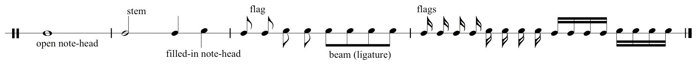Note values may be “open notes” (not filled in or blackened), or “filled-in notes.” In the context of how musical time is organized (discussed below), these will have greater or lesser lengths or time spans.Chapter 2 "The Elements of Pitch:Sound, Symbol, and Tone" will discuss general rules and practices as to how note values are drawn in the context of pitch placement. In the following example they are not yet assigned any particular value: only proportional values in relation to each other.
Below are examples of basic durational values and their common names. Proper names for these values are in parentheses. These names are commonly used in the United Kingdom and Commonwealth countries, as well as by some academics.
Figure 1.2 Durational Values and Nomenclature
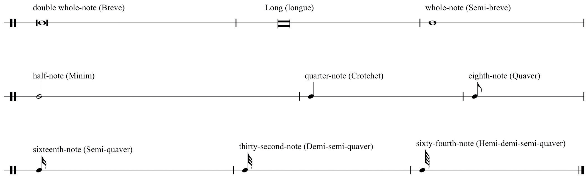There are rare examples of “One-hundred and twenty-eighth-notes.” A notable example is found in the First Movement Introduction to Beethoven’s “Pathetique” Sonata No. 8, Opus 13.
These occur at the end of the Introduction. See this link:
http://imslp.org/wiki/Piano_Sonata_No.8,_Op.13_(Beethoven,_Ludwig_van)
Durational values are held in proportion to one another. Observe that each value is proportionally related to adjacent values. If we assign the arbitrary value “1n” to a whole-note, then the half-note equals 1/2n. Therefore two half-notes are required to equal a whole note, two quarter-notes equal a half-note and so on.
Figure 1.3 Durational Value Chain

At times notes may have a diagonal slash (or slashes) through the stem, or below a note value that has no stem. These slashes are interpreted one of two ways:
As a notational convenience, slashes represent flags, denoting embedded smaller durational values:
Figure 1.4 Smaller Value “Slashes” (Tremolo)
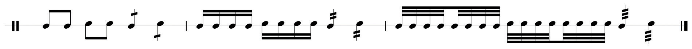These can be interpreted as “eighth-notes in the space of a half-note” (4), or sixteenth-notes in the space of a quarter,” (4) and so on. This is merely a notational convenience employed as needed.
Durational values may have small periods (“dots”) appended to them. Originally, this evolved as a notational “convenience,” a proportional division indication, or as a segment boundary. Dotted valuesDurational Values may be non-dotted or dotted. Dotted Values have three interpretations: (1) The dot represents the addition of half the original value; (2) The dotted value may divide into two lower dotted values; (3) Or the dotted value may divide into three non-dotted values. This potential division into three is critical for comprehending Compound Meter. have three different interpretations:
A dotted value may represent the addition of half of the original duration, or “half again as much as the original value” (“1+1/2n”).
Figure 1.5 Dotted Values: First Interpretation
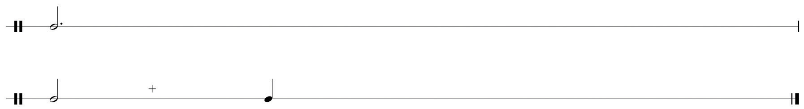A dotted value may be divisible into three non-dotted values:
Figure 1.6 Dotted Values: Second Interpretation

A dotted value may be divisible into two smaller dotted values:
Figure 1.7 Dotted Values: Third Interpretation

These varying uses of dotted values shall come into focus in subsequent discussions concerning meter and notational practice in Section 1.2 "Pulse, Tempo, and Meter" and Section 1.3 "Music Notation Practices" below. As with non-dotted values, dotted values are in proportion to one another as well. Figure 1.8 "Dotted Values" shows the proportional chain of dotted values.
Figure 1.8 Dotted Values
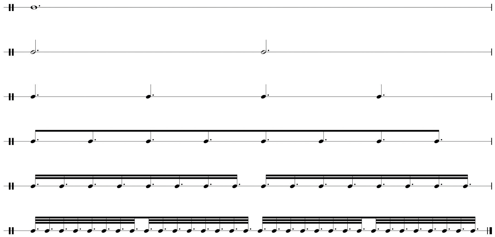Just as durational values represent the length of sound in music, symbols of equivalent value represent the length of silence. These are called restsRests are the symbols used to represent the relative length of silence in music. They are equivalent in value to durations.. Figure 1.9 "Rests" shows rests and their labels. As with durational values, rests are proportional to one another also.
Figure 1.9 Rests
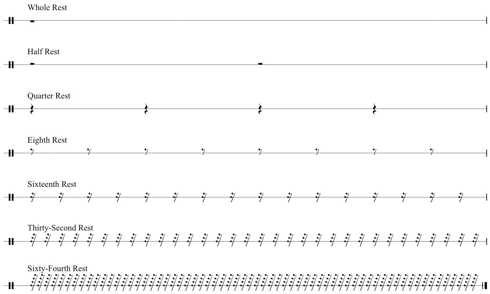The student should understand:
Practice drawing durational values and rests following the model below. Make sure to draw noteheads correctly (no “stick figures” please!).
Figure 1.10 Durations and Rests

For each value given, draw three lower divisions: for example, given a whole-note, draw two half-notes, four quarter-notes, eight eighth-notes. Use flags and beams (ligatures). Make sure to align and space properly. See sample solution.
Figure 1.11 Duration Divisions

For each value given below, draw the appropriate equivalent rest.
Figure 1.12 Equivalent Rests

For each dotted value:
Figure 1.13 Dotted Values
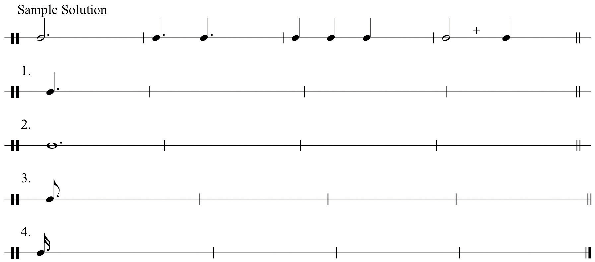For each incomplete example below, add the appropriate durational value that will complete the background value.
Figure 1.14 Incomplete Values

We perceive the organization of time in music in terms of three fundamental elements, Pulse, Tempo, and Meter. Use prompts to assist you in understanding these elements:
PulsePulse (or beat) is the regularly recurring background pulsation in music., or beat, is the regularly recurring underlying pulsation that we perceive that compels music to progress through time. Pulse makes us react kinesthetically to music: in other words, it compels motion. We tap our feet, we dance, we march, or we may just “feel” the pulse internally.
In a piece of music, some durational value is assigned to be the pulse. All other durations are proportionally related to that fundamental background pulse.
TempoTempo is the rate at which we perceive the pulse in time. This is indicated by metronome markings, pulse value markings and terms. (Latin: tempus-“time”) is the rate (or relative speed) at which the pulse flows through time. This is determined by numerous methods:
A metronome marking: for example, MM=120 means the pulse progresses at 120 beats per minute (two beats per second). Often, in practice, the background durational value will be drawn and assigned a metronomic value. (You will sometimes encounter the marking bpm, “beats per minute.”)
Figure 1.15 Metronome Marking and Pulse Marking
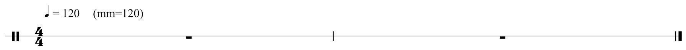In an attempt to refine these terms, to make them more precise, diminutives were added: Andantino indicates a slightly faster pace than Andante. Other modifiers came into common practice as well. For example, Andante con moto (“going, with motion”) is self-explanatory.
Beginning in the 19th Century, composers often used equivalent tempo and performance descriptions in their native languages, or mixed Italianate terms and vernacular terms within the same piece.
MeterMeter is the “ratio” of how many of what type of pulse values are grouped together. Simple Meter divides the pulse into two equal portions; Compound Meter divides the pulse into three equal portions., expressed in music as a time signature, determines:
Time signaturesMeter is expressed as time signatures, indicating how many pulses (beats) are grouped together into cogent units. consist of two numbers, one over another, placed at the beginning of a composition. They may occur anywhere in a composition where a meter change is required. They are NEVER written as fractions!
To understand meter fully, we must first determine the fundamental nature of the prevailing background pulse or beat. In given meters, we perceive beats as having the potential (or capacity) of being divided in two ways:
We name meters according to two criteria:
Figure 1.16 Simple and Compound Divisions of Given Pulses

So, a time signature wherein (a) the pulse subdivides into two portions, and (b) two pulses are grouped together is called Simple Duple. Three pulses grouped together, Simple Triple and so forth. A time signature wherein (a) the pulse subdivides into three portions, and (b) two pulses are grouped together is called Compound Duple, three pulses, Compound Triple, and so forth.
Figure 1.17 Time Signatures and Labels

Let us address simple meter first. Analyze this by answering two questions concerning the stated time signature:
So the time signature has two quarter-notes grouped together, therefore, we label this as Simple Duple.
Figure 1.18 Typical Simple Meters
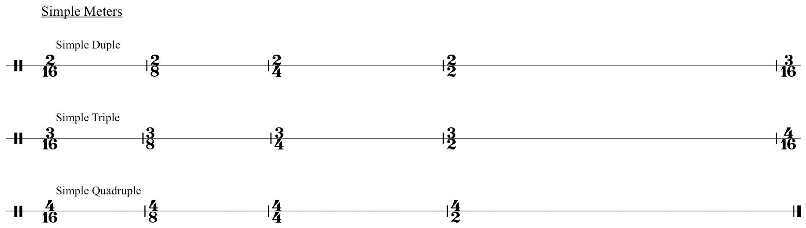In Renaissance music, specialized symbols were employed that were the forerunner of time signatures. These symbols determined how relative durational values were held in proportion to one another. We continue to employ two holdovers from this system.
Figure 1.19 “Common Time” and “Cut Time”

“Common Time” and “Cut Time,” are slang terms. Other names for “Cut Time” are “March Time” and the proper name, Alla Breve.
The characteristics of individual time signatures are perceived in multiple layers that can be reduced to three basic levels:
Therefore, we can graph time signatures using the following table.
Table 1.1 Time Signature Table
| Pulse | (The fundamental background pulse.) |
| First Division | (The level determining pulse division into two portions or three portions.) |
| Subdivisions | (Subsequent divisions into smaller values.) |
Figure 1.20 Time Signature Table Example
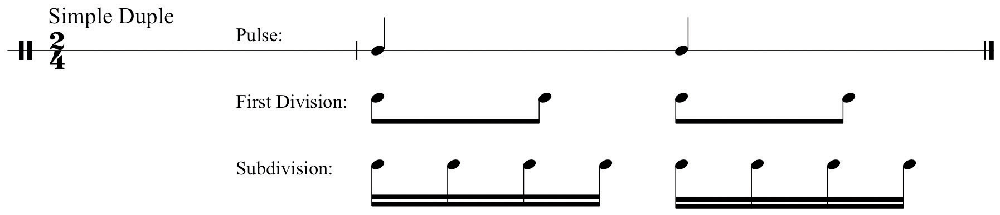Use this table to map out time signatures and their component organizational layers.
Understanding compound meters is somewhat more complex. Several preparatory statements will assist in comprehension:
Compound Meters have certain characteristics that will enable prompt recognition:
In theory, any Compound Meter may be perceived as Simple Meter,depending upon the tempo:
In Compound Meter, the written time signature represents the level of First Division,not Pulse:
As with Simple time signatures, let us employ the same Time Signature Table to graph Compound time signatures. Reviewing Statement 3 above, we will follow a slightly different procedure than that used for graphing Simple Meter:
For the Compound Duple time signature list six eighth-notes in two groupings of three in the First Division row:
Figure 1.21 Compound Meter, First Division Groupings
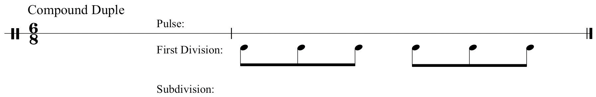Next, sum these groupings of three into dotted values (“two eighth-notes equal a quarter-note, the additional quarter-note represented by a dot”); list the two resulting dotted quarter-notes in the Pulse row:
Figure 1.22 Sum to Find Compound Pulse Value
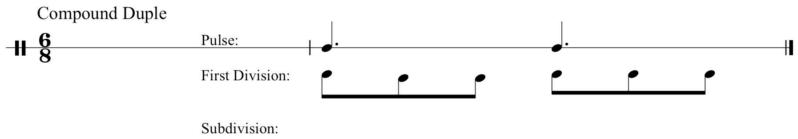Lastly, draw subdivisions of the First Division values in the Subdivision row:
Figure 1.23 Subdivision

Below are typical compound meters and their respective labels.
Figure 1.24 Typical Compound Meters

Note that Simple meters divide all values into two subdivisions in each level of the Table. Compound meters divide the First Division level into three (see Statement 1 above). Subsequent subdivisions divide into two.
Some Simple Triple time signatures may be perceived as either simple or compound, again depending upon tempo. In practice, this is a limited list: The time signatures:
may be perceived as Simple Triple if the tempo is relatively slow. In other words, you perceive the “lower number” of the time signature as the fundamental background pulse value. As the tempo for any of these becomes relatively faster, we cease to perceive the lower number as Pulse. Instead we perceive the lower number as the First Division of a Compound meter.
The Time Signature Table will show this:
Figure 1.25 Simple Triple, Compound “Single”

In the next section, these fundamental elements of sound, symbol, and time will be placed in full musical context by uniting them with common notational practices.
The student should be able to define and understand:
Using the Time Signature Table, map out all examples of:
Simple Duple and Compound Duple.
| Pulse | |
| First Division | |
| Subdivisions |
Simple Triple and Compound Triple.
| Pulse | |
| First Division | |
| Subdivisions |
Simple Quadruple and Compound Quadruple.
| Pulse | |
| First Division | |
| Subdivisions |
Note: At the Subdivision level, draw one layer of subdivisions only.
Using the Time Signature Table map out the following time signatures as both Simple and Compound Meters:
| Pulse | |
| First Division | |
| Subdivisions |
| Pulse | |
| First Division | |
| Subdivisions |
| Pulse | |
| First Division | |
| Subdivisions |
| Pulse | |
| First Division | |
| Subdivisions |
The following exercises alternate between simple duple and compound duple. Tap these rhythms while keeping the same constant background pulse. Practice each segment separately at first: then practice in sequence, switching from simple to compound time as you go.
Figure 1.26 Rhythm Drill

In Section 1.2 "Pulse, Tempo, and Meter", when describing meter and time signatures, we spoke of “grouping pulse values together” to form discrete units. In music these groupings are delimited, or “bounded” by vertical strokes called bar lines. Bar lines serve as boundaries, defining a “measure” of music.For these examples we will employ a five-line staff. Use of the staff will be explained fully in Chapter 2 "The Elements of Pitch:Sound, Symbol, and Tone".
The crossover period between Renaissance and Baroque music at end of the 16th Century and the beginning of the 17th Century witnessed many changes as to how music was written. The rise of the “Second Practice,” (Seconda prattica) or “New Style” (Stile moderno) of composition (early opera) and the concomitant rise of instrumental music necessitated changes in notational practice.
Since rhythmic durations in Renaissance music were organized in proportion to one another (differing forms of mensural notation), measures and their separating bar lines were not in use, nor were time signatures, as we know them. These elements came into gradual use. Scholars offer many explanations for this: practicality and ease of reading and interpretation, a shift away from multi-voiced music and toward solo or homophonic settings in dramatic music, the desire for segmenting music into discrete segments, and so forth.
This became common notational practice. A measureA measure of music is a span of music, bounded by a bar line. It is a discrete grouping of pulse values dictated by the time signature. of music constituted beat groupings (or their durational equivalents) within the context of the stated time signature, bounded by a bar-line. Composers may use a double bar line to denote sectional divisions in a piece. A final bar line ends the composition.
Figure 1.27 Measure, Bar lines, Double bar line, Final bar line
Within measures, specified beats received greater of lesser accentuation, referred to simply as “strong” or “weak” beats. This perception is based upon how the relative strength of beats is perceived in a given time signature.
Figure 1.28 Sample Time Signatures and Beat Accents

As performers, as teachers, and as potential ensemble leaders, all musicians must have a basic understanding of typical conducting patterns. In conducting, the terms arsis and thesis will be encountered. In this context, synonyms for these terms are “upbeat” (preparatory beat) and “downbeat” (commencement beat). The common conducting patterns are shown in Figure 1.29 "Two-Pattern" through Figure 1.33 "Six-Pattern".
The Basic Two-Pattern: for example any simple duple or compound duple time signature. When practicing this, think “away (from the body)-up, away-up…
Figure 1.29 Two-Pattern

All conducting figures by Michael Paolantonio
The Basic Three-Pattern: any simple triple or compound triple time signature. Think “down-away-up…”
Figure 1.30 Three-Pattern

All conducting figures by Michael Paolantonio
The Basic Four-Pattern: any simple or compound quadruple time signature. Think “down-across-away-up…”
Figure 1.31 Four-Pattern

All conducting figures by Michael Paolantonio
The One-Pattern: depending upon tempo, triple meters may be conducted “in one.” Refer to Section 1.2 "Pulse, Tempo, and Meter".
Figure 1.32 One-Pattern
All conducting figures by Michael Paolantonio
The Basic Six-Pattern:
Figure 1.33 Six-Pattern

All conducting figures by Michael Paolantonio
Numerous expedient shortcuts evolved to facilitate writing music efficiently, as well as eliminating the redundancy of writing a given passage over again. Specific symbols, called repeat signsSpecial symbols indicating that segments of the music previously performed are to be repeated. or repeats, came into use whereby a composer could indicate the repetition of a measure, a group of measures, or an entire passage.
Figure 1.34 Repeats, Measure Repeats, Section Repeats

A repeated section might end differently than its first iteration: the repeated section might end differently or it might make a transition to a new section. Composers employ “First and Second Endings” to serve this function.
Figure 1.35 First and Second Endings
A passage repeated multiple times is so indicated by listing the number of repetitions in the first ending. In Jazz notation and vernacular music, this may be accompanied by an instruction at the beginning of the passage that indicates the number of iterations, for example, 3x’s, meaning “repeat this passage three times.”
Figure 1.36 Multiple Endings

At times in a composition, it is desirable or necessary to repeat an entire earlier passage, or return to the beginning of the piece. Rather than re-write the particular passage, specific notational expedients evolved to accommodate this. These shortcuts employed Italian phrases, accompanied by specific symbols. These phases and symbols are directions to the performer as to what segment is repeated and how to conclude the piece.
Figure 1.37 D.C. al Fine, D.S. al Coda
The student should be able to define and understand:
Incomplete rhythms are given in each of the following measures. Add the appropriate durational value to complete the measure. See example.
Figure 1.38 Incomplete Measures

For each of the following examples write in the missing time signature and label the meter type.
Figure 1.39 Identify Meter
In each example below using “roadmaps”, draw arrows to indicate what segment is repeated and how the segment concludes. See example.
Figure 1.40 “Roadmaps”
Curves lines have several uses in music notation. Curves lines may be drawn above or below segments of a composition (slurs or phrase markings). A curved line may also connect two note values across a bar-line (ties).
A slurSlurs are curved lines above or below notes showing connection. is a performance indication in music, used to instruct the performer to connect those notes encompassed by the slur. A wind player will not articulate (“tongue”) these notes, a string player will play them all in one bow stroke, a pianist will strive to connect the notes fluidly.
Figure 1.41 Slurs

Slurs should be drawn connecting or encompassing note-heads. A common mistake by students is to draw slurs connecting stems. The exception to this general practice occurs when a slur is drawn over note stems that change direction. (See measure 1 of Figure 1.41 "Slurs".)
A phrase markingPhrase markings are curved lines over segments of music showing complete ideas or statements. is also a performance indication. A composer will encase a passage of music within a phrase marking to indicate a complete idea, a complete musical statement. This does not have any effect upon articulation: many times slurs may be found within the bounds of a phrase marking. Phrase markings are placed above the staff.
Figure 1.42 Phrase Markings
At times a durational value exceeds the bounds of a measure in a given time signature: the note value occupies more “beats” than the measure will allow. To accommodate this, we use a tieA tie is a short slur used to connect notes across a bar line., a short curved line connecting one durational value to another in the succeeding measure.
Figure 1.43 Ties

Dynamic markings indicate relative degrees of volume in a composition or a passage of music. Articulations are common symbols (and their associated terms) directing how notes are performed. These are listed in Chapter 19 "Appendix A: Common Musical Terms" with other common musical terms.
The basic dynamic markings are:
Some composers expand this range, adding dynamic markings using three or four “p’s” or three or four “f’s.”
Figure 1.44 Basic Dynamic Markings
Composers employ special markings that serve as performance “indicators,” denoting how notes are to be performed. Those commonly used are listed below.
Staccato: originally interpreted as “half the written value,” it has come to mean “detached” (not necessarily “short”).
Figure 1.45 Staccato Examples

Legato: properly Tenuto (“held”), meaning held to full value and implying connection to the following note value.
Figure 1.46 Legato Examples

Marcato: (“marked”), accented.
Figure 1.47 Marcato Examples

Marcatisimo: heavily accented.
Figure 1.48 Marcatissimo Examples

Martelé: in writing for strings, this marking is used to denote a very heavy accent, heavy bow pressure being achieved by the use of “downbow.”
Figure 1.49 Martelé Examples

Review the fundamental attributes defining simple and compound meter. Simple meter divides the fundamental pulse into two portions, compound meter into three. At times it is desirable (or necessary) to insert a compound division into simple time, or a simple division into compound time. This process is called artificial divisionInserting a compound division into simple time (triplets) or simple divisions into compound time (duplet)., commonly called tuplets.
In a simple meter, inserting a compound division (artificially dividing the beat into three equal portions) is called a triplet and is written thus:
Figure 1.50 Triplets in Simple Meter

Conversely, inserting a simple division into a compound meter (artificially dividing the beat unto two equal portions) is called a duplet, and is written thus:
Figure 1.51 Duplets in Compound Meter

A triplet may occur across multiple beats in Simple Meter, called a super-triplet. In Compound Meter, a larger tuplet across multiple beats may occur.
Figure 1.52 Super-triplet, Tuplet

Composers have employed many other tuplet figures, inserting larger artificial divisions within beats or groups of beats.
Figure 1.53 Examples of Larger Tuplets

Artificial division is used as a process for making rigid time and beat division much more fluid and irregular. This technique is especially prevalent in music from the 19th Century onwards.
Syncopation is another common rhythmic device. The simplest definition of syncopation is:
Here are some typical rhythmic patterns demonstrating this device:
Figure 1.54 Examples of Syncopation Patterns
Asymmetrical meter has become a very common device in the composer’s arsenal. Often called “Odd-meters” (a slang term) because the top number of such time signatures is an “odd number,” these are time signatures that mix simple and compound beats within a measure or pulse grouping. Common examples are:
Triple meters and their multiples are not included in this category generally. Often these meters are treated in the same manner that we treat compound meters, that is, the written time signature represents First Division. So, for example, might be grouped as two eighth notes plus three eighth notes or the reverse.
Figure 1.55 Division Groupings

A seven-meter might be grouped 2+2+3, 3+2+2, or 2+3+2, and so forth for other asymmetrical meters. It is possible to construct asymmetrical divisions from typical meters by irregular groupings. For example,
Figure 1.56 Other Meters and Sample Groupings
Until the 20th Century, there were relatively few examples of asymmetrical meter in the literature. A notable exception is the second movement of Tchaikovsky’s Sixth Symphony (Páthetique) (in 5).
See this link:
http://imslp.org/wiki/Symphony_No.6,_Op.74_(Tchaikovsky,_Pyotr_Ilyich)
Asymmetrical meter is a hallmark of 20th- and 21st-century music, in both classical and vernacular genre. Composers freely employed asymmetrical meters for entire segments and pieces or employed them incidentally as context demanded. Examples that come readily to mind include:
There are many other examples.
It became customary for 20th-century composers to mix asymmetrical meters as needed, their use dictated by phrasing, text rhythm, and so forth. Concluding our discussion of rhythm, we are fully prepared to enter the realm of pitch in the next chapter.
The student should understand:
Using the Time Signature Table, graph the following asymmetrical meters. List each written time signature in the First Division row, sum to find component Pulses, then provide one level of Subdivision.
| Pulse | |
| First Division | |
| Subdivisions |
| Pulse | |
| First Division | |
| Subdivisions |
| Pulse | |
| First Division | |
| Subdivisions |
| Pulse | |
| First Division | |
| Subdivisions |
List three possible division groupings for each of the following time signatures:
See example.
Figure 1.57 Asymmetrical Division Groupings

Sum the divisions you’ve created in order to determine pulse values. See example.
Figure 1.58 Asymmetrical Pulse Values

This chapter serves as a detailed survey to those elements of music that represent time and how it is symbolized. Unlike the Plastic Arts (painting, sculpture), music is not a temporally fixed entity: it exists in its own time, calculated by the progression of rhythm and meter across a compositionally predetermined time span.
An intimate and close understanding of rhythm and its attributes is the first essential skill any musician must acquire. From performance through analysis, aspects of rhythmic organization permeate the entire range of all skill-sets that serves as the basis for becoming a competent, literate, functional musician.
The next chapter will discuss the other half of this equation: pitch and its attributes. These skill-sets, in tandem with rhythm, will prepare the student for exploring first the grammar, then the syntax of the musical language.